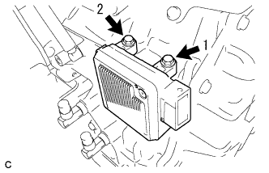
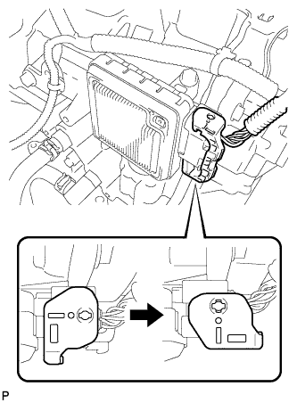

Transmission Control Computer Assembly (U660E) Installation |
| 1. Install Transmission Control Computer Assembly |
Install the computer to the transaxle.
 |
Tighten the 2 bolts in the order shown in the illustration.
 |
Connect the connector to the computer and lock the connector with the lock lever.
| 2. Install Battery Carrier NO.2 |
 |
Install battery carrier NO.2 with the 2 bolts.
| 3. Install Battery Carrier |
 |
Install the battery carrier with the 4 bolts.
Attach the 2 clamps to the battery carrier.
Install the battery tray.
| 4. Install Battery |
Install the battery to the vehicle
Install the insulator.
 |
Connect the current sensor connector.
 |
Install the battery clamp with the bolt and nut.
Connect the battery positive terminal with the nut.
| 5. Connect Battery Negative Terminal |
| 6. Install Radiator Upper Air Deflector |
 |
Install the radiator upper air deflector with the 9 clips.
| 7. TaSCAN-AT Learned Value Initialization and G Sensor 0 Point Learning |
)| 8. A/T Unit Compensation |
)| 9. Setting Procedure When Disconnecting/Reconnecting Battery Terminal |
)